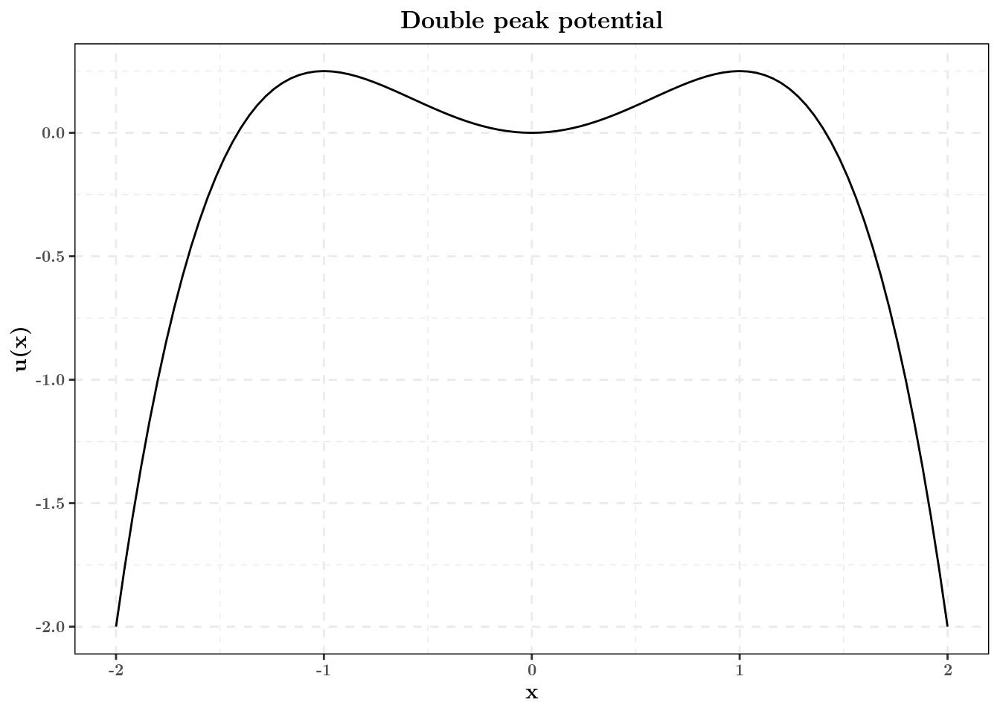
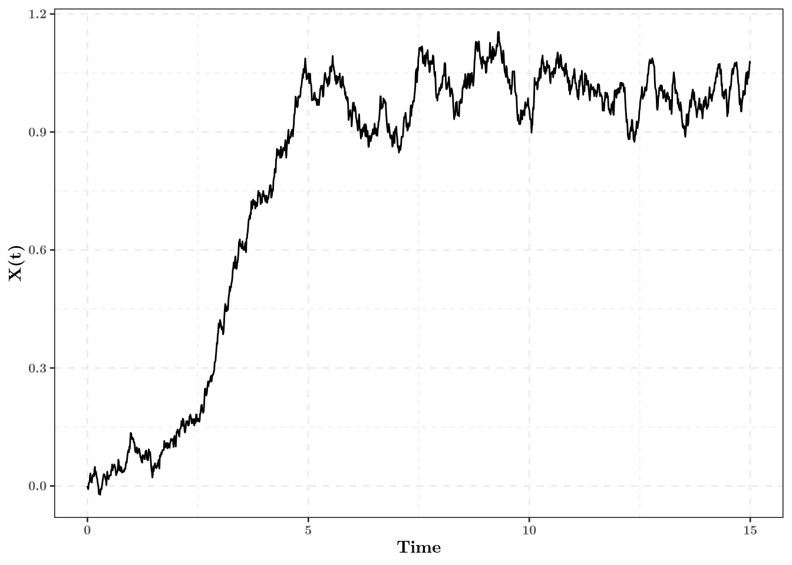
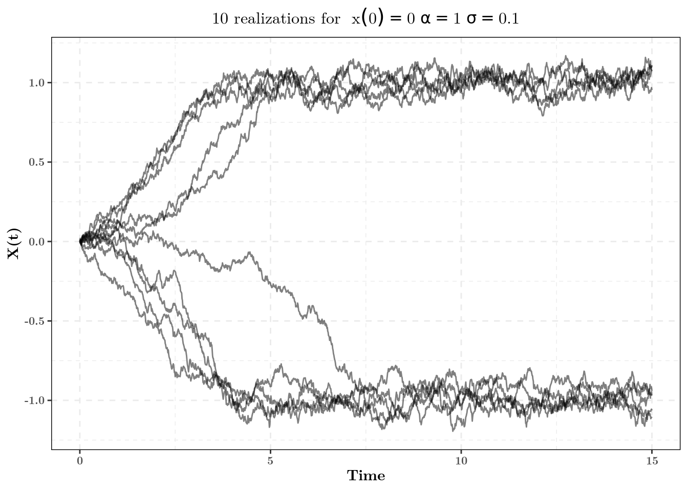
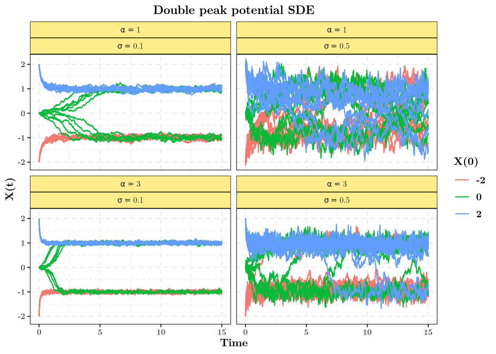

Exemple d'équation différentielle stochastique
Modèle
On s’intéresse ici à l’équation différentielle stochastique:
\[\text{d}X(t) = \alpha X(t)(1 - X(t)^2) \text{d} s + \sigma \sqrt{1 + X(t)^2}\text{d} B(t),~X_0 = x_0.\]
On remarquera que la fonction \(f(x) = \alpha x(1 - x^2)\) satisfait la relation: \[f(x) = \nabla_x u(x)\] où \(u(x)\) est la fonction de potentiel \(u(x) = \alpha(\frac{x^2}{2} - \frac{x^4}{4})\).
Pour \(\alpha = 1\), ce potentiel est le suivant:
tibble(x = seq(-2, 2, length.out = 501)) %>%
ggplot(aes(x = x)) +
stat_function(fun = get_potential) +
labs(y = "u(x)", title = "Double peak potential")
Ainsi, la direction préférentielle de la trajectoire est donnée par le gradient de cette fonction. On peut en déduire que les points \(-1\) et 1 seront deux points attractifs.
Simulation avec R
library(tidyverse)
# library(ggplot2); library(purrr); library(dplyr)
# are enough if tidyverse doesn't workNous allons maintenant coder en R une fonction qui permet de simuler des trajectoires de cette EDS à paramètres et temps de simulation fixés.
On commence par coder les fonctions de dérive et de diffusion, en explicitant la dépendance en les paramètres:
get_drift <- function(x, alpha){
alpha * x * (1 - x^2)
}get_diffusion <- function(x, sigma){
sigma * sqrt(1 + x^2)
}Ensuite on peut créer la fonction de simulation, qui dépendra de \(x_0\), \(\alpha\) et \(\sigma\).
Remarque: Comme sortie de la fonction, on choisit un tibble qui conserve les positions simulées ainsi que toutes les informations de simulation.
Cela permettra de faciliter les représentations graphiques plus tard:
simulate_double_peak_sde <- function(times, # Simulation times
x0, alpha, sigma) # Simulation parameters
{
n_points <- length(times) # Number of points
trajectory <- rep(NA, n_points) # Initialization of output trajectory
trajectory[1] <- x0 # First position
for(k in 2:n_points){ # Iteration
h <- times[k] - times[k - 1] # Time step (must be small)
euler_mean <- trajectory[k - 1] + # x
get_drift(trajectory[k - 1], alpha) * h # drift(x) * h
euler_variance <- get_diffusion(trajectory[k - 1], sigma)^2 * h
trajectory[k] <- rnorm(n = 1, # 1 gaussian sample
mean = euler_mean, # Mean
sd = sqrt(euler_variance) # Standard deviation
)
}
# Return tibble to ease later visualization
tibble(t = times,
x_t = trajectory,
x0 = x0,
alpha = alpha,
sigma = sigma)
}Simulation simple
On peut ainsi simuler une première trajectoire, pour \(x_0 = 0,~\alpha = 1,~\sigma = 0.1\) et la représenter graphiquement:
set.seed(123) # For reproducibility
my_times <- seq(0, 15, by = 0.01) # Vecteur 0, 0.01, 0.02,...., 9.99, 10
simulate_double_peak_sde(times = my_times, # Simulation
x0 = 0, alpha = 1, sigma = 0.1) %>% # Then
ggplot(aes(x = t, y = x_t)) + # plot it
geom_path() +
labs(x = "Time", y = "X(t)")
Bien sûr, cette trajectoire n’est qu’une réalisation du processus, on peut regarder 30 réalisations:
set.seed(123) # For reproducibility
rerun(10, # Rerun 30 times the simulations
simulate_double_peak_sde(times = my_times, # Simulation
x0 = 0, alpha = 1, sigma = 0.1)) %>% # Then
bind_rows(.id = "Replicate") %>% # Aggregate it in a single tibble, keeping
# track of the replicate identity
ggplot(aes(x = t, y = x_t)) + # plot it
geom_path(aes(group = Replicate), alpha = 0.5) + # Do a track per replicate
labs(x = "Time", y = "X(t)",
title = expression("10 realizations for "~x(0)==0~alpha==1~sigma==0.1))
On peut ainsi voir ici clairement apparaître nos deux points d’attractions. On peut se demander si on peut passer de \(-1\) à 1?
Influence des paramètres
On peut regarder les variations des trajectoires selon les paramètres.
Ici les différents paramètres sont \(x_0\), \(\alpha\) et \(\sigma\). On voudrait tester \(x_0 = \lbrace -2, 0, 2\rbrace,~ \alpha = \lbrace 1, 5 \rbrace, \sigma = \lbrace 0.1, 0.5\rbrace\), en testant toutes les combinaisons possibles (ici 12).
Une manière concise et rapide de faire cela en R est la fonction pmap_dfr du package purrr, qui prend en entrée une tibble dont chaque ligne et renvoie un grand tibble concaténant tous les résulats.
Création du plan d’expérience
La première chose à faire est de créer le tableau des combinaisons de paramètres possibles, on
utilise pour cela la fonction expand.grid:
# IMPORTANT: Columns names must be the same as argument names of the
# simulation_double_peak_sde function
parameters_list <- expand.grid(x0 = c(-2, 0, 2), # x0s values
alpha = c(1, 3),
sigma = c(0.1, 0.5)) %>% # Creates the design grid
as_tibble() # Turns it into a tibbleLe tableau obtenu est le suivant:
# A tibble: 12 x 3
x0 alpha sigma
<dbl> <dbl> <dbl>
1 -2 1 0.1
2 0 1 0.1
3 2 1 0.1
4 -2 3 0.1
5 0 3 0.1
6 2 3 0.1
7 -2 1 0.5
8 0 1 0.5
9 2 1 0.5
10 -2 3 0.5
11 0 3 0.5
12 2 3 0.5Simulations sur tout le plan d’expérience:
Dans le code suivant, on teste les 12 combinaisons possibles. Pour chaque combinaison, on fait une simulation. Moralement, pmap_dfr fait une boucle sur les 12 lignes du tableau précédent en concaténant le résultat dans un tibble.
pmap_dfr(.l = parameters_list, # List of parameters
.f = simulate_double_peak_sde, # Function to apply
times = my_times # Additionnal arguments
)Comme on veut 10 simulations par jeu de paramètres, il suffit de répéter 10 fois ce code
grâce à rerun et d’aggéger les résultats dans un tibble.
set.seed(123) # For reproducibility
all_simulations <- rerun(10, # rerun 10 times
pmap_dfr(.l = parameters_list, # Same code as above
.f = simulate_double_peak_sde,
times = my_times)
) %>% # Then
bind_rows(.id = "Replicate") # Binds it a tibble, keeping track of replicateLe résultat est un tibble de taille conséquente!
# A tibble: 180,120 x 6
Replicate t x_t x0 alpha sigma
<chr> <dbl> <dbl> <dbl> <dbl> <dbl>
1 1 0 -2 -2 1 0.1
2 1 0.01 -1.95 -2 1 0.1
3 1 0.02 -1.90 -2 1 0.1
4 1 0.03 -1.82 -2 1 0.1
5 1 0.04 -1.78 -2 1 0.1
6 1 0.05 -1.73 -2 1 0.1
7 1 0.06 -1.67 -2 1 0.1
8 1 0.07 -1.63 -2 1 0.1
9 1 0.08 -1.62 -2 1 0.1
10 1 0.09 -1.61 -2 1 0.1
# … with 180,110 more rowsReprésentation graphique
On peut maintenant représenter graphiquement les différentes trajectoires simulées:
all_simulations %>% # First we rename alphas and sigmas for nice rendering
mutate(alpha = paste("alpha ==", alpha),
sigma = paste("sigma ==", sigma)) %>%
ggplot(aes(x = t, y = x_t)) + # Usual ggplot
geom_path(aes(group = interaction(Replicate, x0), # Group trajectories
color = factor(x0))) + # Color depending on starting point
facet_wrap(.~ alpha + sigma, # One graph per combination alpha/sigma
labeller = label_parsed) + # Turns names in maths
labs(x = "Time", y = "X(t)", color = "X(0)", # Labelling axis
title = "Double peak potential SDE") 
Ainsi, on peut constater que les trajectoires peuvent passer d’un mode à l’autre. La fréquence de ces passages est fortement dépendante du rapport de force entre la dérive et la diffusionc autour des points d’attraction, soit ici:
\[\frac{\alpha x(1 - x^2)}{\sigma\sqrt{1 + x^2}}.\] Ce rapport essentiel dans la théorie des EDS est parfois appelé rapport signal sur bruit.